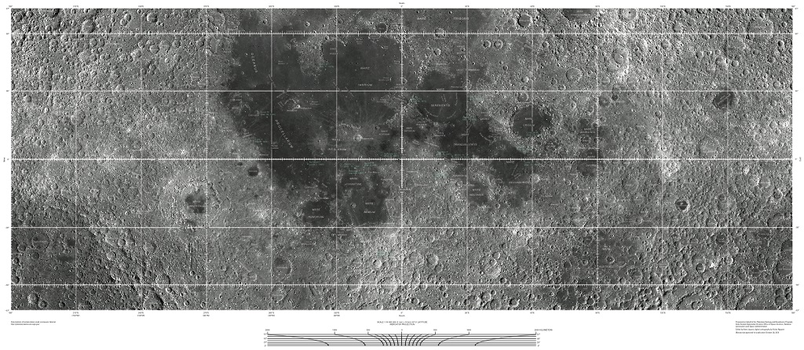

Архив космических миссий
«Чанъэ-2»— вторая китайская автоматическая межпланетная станция (АМС) для исследования Луны, запущенная 1 октября 2010 года с космодрома Сичан в юго-западной провинции Сычуань при помощи ракеты-носителя «Чанчжэн-3C». Полёт впервые для китайской лунной программы проходил напрямую по траектории сближения, без использования старта с орбиты. Аппарат являлся запасным вариантом АМС «Чанъэ-1», который оснастили новыми лазерным альтиметром и камерой высокого разрешения. В задачу «Чанъэ-2» входило изучение условий и выбор подходящего места для посадки лунного аппарата «Чанъэ-3» в 2013 году.
В 19:00 по китайскому времени — ракета оторвалась от Земли. Запуск состоялся в юго-восточном направлении относительно космодрома. Слежение за полётом осуществляли суда Командно-измерительного комплекса «Юаньван-5», «Юаньван-3» и «Юаньван-6», расположенные в этой последовательности непосредственно под траекторией полёта в Тихом океане. Первая ступень и навесные ускорители ракеты-носителя отделились через две с половиной минуты после начала полёта, через четыре минуты с небольшим от начала полёта отделился головной обтекатель ракеты, а через пять с половиной минут от начала полёта отделилась вторая ступень ракеты-носителя. В 19:25:53 АМС отделилась от третьей ступени ракеты-носителя и в 19:35 была на траектории сближения с параметрами: высота в перигее — 212,8 км, высота в апогее — 356 996 км, наклонение — 28,5 градуса. В 19:56 АМС раскрыла солнечные батареи.
Проведённая 2 октября в 12:24 коррекция орбиты очень точно вывела аппарат на селеноцентрическую орбиту, намечавшиеся ещё две коррекции были отменены. 6 октября в 11:06 началось первое торможение «Чанъэ-2» с помощью двигателя тягой 490 ньютонов, которое продолжалось 1942 секунды, благодаря чему аппарат успешно вышел на 12-часовую эллиптическую окололунную орбиту с апоселением 8631 км и периселением около 120 км. 8 октября в 10:45 началось второе торможение, продолжительностью 17 минут, уменьшившее апоселений до 1830 км, а период обращения — до трёх с половиной часов. 9 октября в 11:13 началось последнее, третье, торможение продолжительностью 15 минут, в результате которого зонд вышел на рабочую селеноцентрическую приполярную орбиту с периселением 101 км, апоселением 103 км и периодом обращения 1 час 58 минут.
27 октября аппарат начал фотосъемку участков Луны, пригодных для посадки следующих космических аппаратов. Для решения данной задачи АМС приблизилась к Луне на расстояние 15 километров. 8 ноября в Государственном управлении оборонной науки, техники и промышленности состоялась церемония открытия фотоснимка с изображением части поверхности «Залива Радуги», получение этого снимка знаменует то, что «Чанъэ-2» успешно выполнил свою главную задачу.
Изучение характера радиосигнала и оптические наблюдения за орбитой позволили получить важные научные данные. Задача оптического наблюдения ИСЗ была поставлена коллективу Государственного астрономического института имени П. К. Штернберга МГУ. В. Г. Куртом, П. В. Щегловым и В. Ф. Есиповым разработана методика наблюдений с точным определением координат спутника с временно́й привязкой. Для этой цели была приспособлена аэрофотосъёмочная камера НАФА с 10-сантиметровым объективом, точные промежутки времени измерялись морским хронометром с электрическими контактами. После проявки плёнки треки спутника с помощью измерительного микроскопа «привязывались» к координатам звёзд, затем вручную (на механических счётных машинах) определяли шесть параметров орбиты.
Время пересчёта занимало 30—60 минут. Фотографические наблюдения орбиты «Спутника-1» проводились ежедневно, в течение двух недель В. Г. Куртом и П. В. Щегловым в Ташкенте, из астрономической обсерватории АН Узбекистана. Характер изменений орбиты позволил произвести предварительную оценку величины плотности атмосферы на орбитальных высотах, её высокое значение (порядка 108 атомов/см³) стало для геофизиков большой неожиданностью. Результаты измерения плотности высоких слоёв атмосферы позволили создать теорию торможения спутников, основы которой были заложены М. Л. Лидовым. Сразу же после запуска на это событие обратил внимание коллектив шведских учёных из только что созданной Геофизической обсерватории Кируны (ныне Шведский институт космической физики). Под руководством Бенгта Хултквиста проводились измерения суммарного электронного состава ионосферы с использованием эффекта Фарадея. При последующих запусках спутников подобные измерения были продолжены.
Спутник летал 92 дня, до 4 января 1958 года, совершив 1440 оборотов вокруг Земли (около 60 млн км), а его радиопередатчики работали в течение трёх недель после старта. Из-за трения о верхние слои атмосферы спутник потерял скорость, вошёл в плотные слои атмосферы и сгорел вследствие трения о воздух. Большая по размеру и менее плотная вторая ступень ракеты-носителя «Спутник» (известная также под обозначением «SL-1 R/B») сошла с орбиты раньше спутника, 1 декабря 1957 года, совершив 882 оборота вокруг Земли.
